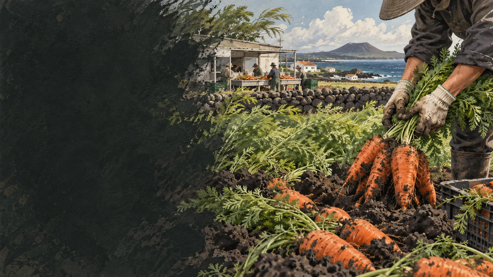

당근밥
쌀에 채 썬 당근을 넣어 은은한 단맛과 색을 더합니다.
 제주에서는 이 재료를
제주에서는 이 재료를
JEJU FOOD FIELD GUIDE · 18
바람 센 화산회토 밭에서 겨울을 지나,
당근은 마을의 이름과 함께 기억됩니다.
구좌 당근의 생활문화를 바탕으로 제작한 기록화 · 생성 이미지
제주 동부농업기술센터 자료에서 구좌는 제주 당근 재배가 집중된 지역으로 확인됩니다. 화산회토 밭과 비교적 온화한 겨울, 농가의 재배·세척·선별 기반이 오랫동안 모이며 ‘구좌 당근’이라는 산지 이미지가 만들어졌습니다.
바람과 많은 비는 장점만이 아니라 농가가 대응해야 할 조건입니다. 파종과 솎기, 병해 관리, 수확 시기를 조절하고 흙을 털거나 세척해 유통하는 과정까지 산지의 기술입니다.
땅속에서 자라는 시간과 수확 뒤 세척·선별, 로컬 가공이 연결되며 구좌 당근의 지역성이 완성됩니다.
밭 상태와 날씨를 보며 씨를 고르게 뿌립니다.
뿌리가 곧고 굵게 자라도록 간격과 수분을 관리합니다.
바람과 저온 속에서 잎과 뿌리가 천천히 자랍니다.
뽑은 당근을 크기와 상처, 모양에 따라 나눕니다.
생당근부터 주스·잼·수프·빵으로 확장합니다.
흙당근은 흙이 묻은 채 유통되어 수분 손실을 늦추기 쉽고, 세척당근은 바로 상태를 확인하고 쓰기 편합니다. 어느 쪽이 더 맛있다고 단정하기보다 세척 여부, 보관 온도와 기간을 함께 봐야 합니다.
쌀에 채 썬 당근을 넣어 은은한 단맛과 색을 더합니다.
짧게 익혀 아삭함과 향을 살립니다.
규격 밖 당근까지 맛있는 상품으로 연결합니다.
표면 상태 확인과 조리가 편함
생식·주스·간편 조리
세척 전 수분 손실을 줄이기 쉬움
저장 뒤 가정 조리
맛과 안전에 문제없는 비규격품 활용
수프·잼·주스·분말
구좌 당근을 소개할 때 단맛만 말하면 지역의 절반만 보입니다. 누가 키웠고 어디서 세척했으며 비규격품을 어떻게 활용하는지까지 담아야 당근과 제주 동부의 관계가 선명해집니다.
주민이 운영하는 마을카페의 구좌 당근 주스처럼 농산물과 마을 운영이 연결된 사례는 ‘지역 이름을 소비한다’는 말의 실제 구조를 보여줍니다.
공공기관·연구기관의 원문을 우선했습니다. 링크와 문서 내용은 2026년 9월 확인했습니다.